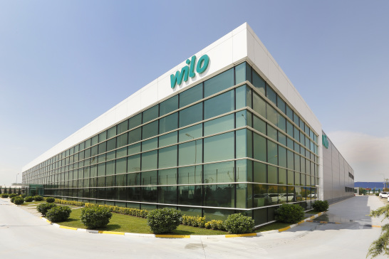

| head | 80.5% |
| body | 70.6% |
| html | 99.7% |
LEADERSHIP CHANGE AT THE TOP OF THE LARGEST REGIONAL INITIATIVE OF THE GERMAN ECONOMYStuttgart.
“Having the opportunity to carry forward a 70-year tradition and follow in the footsteps of outstanding chairs such as Otto Wolff von Amerongen and Klaus Mangold is both a duty and an incentive”, said Hermes on being appointed. “The OAOEV is the German economy’ most important bridge to 29 countries in Central and Eastern Europe. My company, Wilo, has hugely benefited from these networks – which are the envy of many in Europe.”